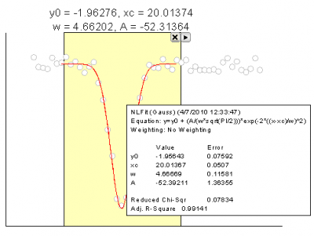
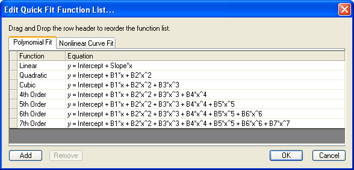
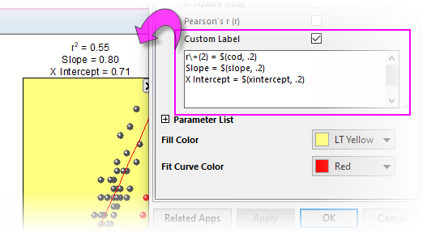
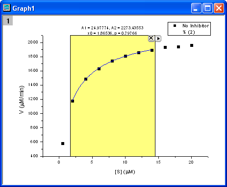
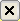
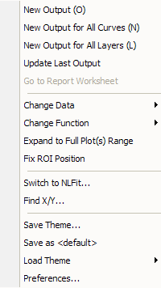

Quick Fit
QuickFit-Gadget
Übersicht
Das Minitool Quick Fit ermöglicht Ihnen das flexible und einfache Durchführen einer linearen Anpassung und einer nichtlinearen Kurvenanpassung für Daten, die in einem Diagramm gezeichnet sind. Das Hilfsmittel erstellt eine grafische Datenauswahl ROI (Region of Interest), mit der Sie einen Bereich der Kurve auswählen und schnell anpassen können. 
Mit dem Minitool Quick Fit können Sie:
- dem Anpassungsdatenbereich ändern, indem Sie einfach das ROI-Feld verschieben und in der Größe verändern,
- eine Liste der favorisierten Anpassungsfunktionen führen,
- aus einer großen Auswahl von benutzerdefinierten und Standardfunktionen wählen und weitere Funktionen zur Favoritenliste hinzufügen,
- Parameterwerte und/oder Fit-Statistiken oberhalb des ROI anzeigen,
- interaktiv mehrere Anpassungsoperationen auf mehrere Bereiche des gleichen Datensatzes oder auf mehrere Datensätze im Diagrammlayer durchführen,
- Anpassungsergebnisse an ein Arbeitsblatt anhängen für zusammengefasste Ergebnisse aus mehreren Anpassungsoperationen,
- das erweiterte Hilfsmittel NLFit mit Hilfe der Minitooleinstellungen für Datenbereich, Funktion und Parameterwerte starten,
- spezifische/neue XY-Werte mit Hilfe der Anpassungskurve suchen,
- Einstellungen, einschließlich Funktionen, in einer Designdatei zur wiederholten Verwendung speichern.
Minitool Quick Fit verwenden
Um das Minitool Quick Fit zu verwenden, wählen Sie im Menü Minitool: Quick Fit bei aktivem Grafikfenster.
Registerkarte Einstellungen
| Anpassungsmodus |
Wählen Sie entweder Polynomialer Fit oder Nichtlineare Kurvenanpassung aus der Auswahlliste. Nachdem Sie den Modus ausgewählt haben, werden die entsprechenden Funktionen in der Auswahlliste Funktion aufgelistet. |
| Funktion |
Sie können eine Funktion zum Durchführen der Anpassung auswählen. Beachten Sie, dass Sie dieser Liste weitere Funktionen hinzufügen können, indem Sie die Option <mehr> auswählen, um den Dialog Quick Fit-Funktionsliste bearbeiten zu öffnen.
Funktionsliste bearbeiten
- 
- In diesem Dialog können Sie Funktionen in der Quick Fit-Funktionsliste hinzufügen bzw. entfernen. Sie können die Funktionen in der Funktionsliste aber auch durch Drag & Drop oder mit Hilfe des Kontextmenüs nach unten oder oben verschieben.
|
| Scheinbarer Fit |
Dieses Konntrollkästchen ist nur verfügbar, wenn der Anpassungsmodus auf Polynomialer Fit gesetzt ist.
Legt fest, ob die scheinbaren Werte zum Anpassen entsprechend der aktuellen Achsenskalierungen verwendet werden. Aktivieren Sie zum Beispiel dieses Kontrollkästchen, um die exponentiellen Zerfallsdaten mit einer geraden Linie anzupassen, wenn die Daten auf einer Log-Skala gezeichnet werden.
Wenn dieses Kontrollkästchen aktiviert ist und die Daten mit ihnen verbundene Fehlerwerte haben, verwendet Origin die größeren der positiven/negativen Fehler als Gewichtung.
|
 |
Die scheinbare Anpassung ist nur sinnvoll, wenn die Anpassung von einem Diagramm mit nichtlinearen Achsen (z.B. Log10) aus gestartet wird. Wenn Sie diese Option aktiviert haben, transformiert der Fitter die Rohdaten in einen neuen Datenraum entsprechend der Achsentypen und führt dann die Anpassung für die transformierten Daten durch. Wie Sie sehen können, ist der scheinbare Fit ein Äquivalent zum Transformieren der Rohdaten im Arbeitsblatt und dem Anwenden einer direkten Anpassung.
|
Registerkarte Grafische Datenauswahl
Legt die Einstellungen der grafischen Datenauswahl fest. Die Anpassung wird innerhalb der grafischen Datenauswahl durchgeführt.
| X-Skala von |
Legt den Startwert von X der grafischen Datenauswahl fest. |
| X-Skala bis |
Legt den Endwert von X der grafischen Datenauswahl fest. |
| Festgelegt (kein Verschieben durch graf. Datenauswahl) |
Bestimmt, ob die X-Skala der grafischen Datenauswahl festgelegt wird. Sobald dieses Kontrollkästchen aktiviert ist, wird keine Verschiebung oder Größenänderung der grafischen Datenauswahl mehr zugelassen. |
| Toolname zeigen |
Legt fest, ob der Name des Hilfsmittels im Diagramm gezeigt wird. |
| Rechteck nach Anpassung zeigen |
Legt fest, ob das Rechteck über dem Diagramm nach der Anpassung gezeigt werden soll. |
| Signifikante Stellen |
Legt die signifikanten Stellen fest. Die standardmäßigen signifikanten Stellen für das System können im Dialogfeld Option festgelegt werden. Siehe auch: Systemstellen. |
| In grafischer Datenauswahl in der Mitte oben zeigen |
Legt die Werte fest, die mittig und oberhalb der grafischen Datenauswahl gezeigt werden.
Alternativ können Sie das Kontrollkästchen Benutzerdefinierte Beschriftung aktivieren und Zeichenketten in das zugehörige Textfeld eingeben.
- 
- Origin 2022b oder höher ist erforderlich.
- Erstellen Sie Ihre benutzerdefinierte Beschriftung mit Hilfe der Kombination aus (a) literalem Text (b) Escape-Sequenzen (z. B. griechische Symbole oder hochgestellte Zeichen) und (c) benutzerdefinierten Variablen (unten aufgelistet). Legen Sie Dezimalstellen etc. mit Origins benutzerdefinierten Formaten fest.
- Benutzerdefinierte Beschriftungen werden bewahrt und aktualisiert, wenn Sie eine neue Ausgabe auswählen.
- Benutzerdefinierte Beschriftungen können als Teil eines Dialogsdesigns gespeichert werden.
| Dialog Beschriftung |
Benutzerdefinierte Variable |
Beispiel |
| Reduziertes Chi-Quadrat |
chisqr |
Chi-Square \g(c)\+(2) = $(chisqr, .2) |
| R-Quadrat |
cod |
R-Quadrat r\+(2) = $(cod, .2) |
| Pearson r |
r |
r = $(r, .2) |
| Schnittpunkt mit der Y-Achse |
intercept |
Schnittpunkt mit Y = $(intercept, .2) |
| Steigung |
slope |
Steigung = $(slope, .2) |
| Schnittpunkt mit der X-Achse |
xintercept |
Schnittpunkt mit Y = $(xintercept, .2) |
|
| Parameterliste |
Alle Parameter der Anpassungsfunktion werden im Baumknoten aufgelistet, und Sie können sie je nach Bedarf auswählen, um sie oberhalb der grafischen Datenauswahl anzuzeigen. |
| Füllfarbe |
Legt die Farbe des Rechtecks der grafischen Datenauswahl fest. |
| Farbe der Anpassungskurve |
Legt die Farbe der angepassten Kurve fest. |
Registerkarte Beschriftungsfeld
Diese Registerkarte legt den Inhalt des Ergebnistextfeldes fest, das in das Diagramm eingefügt wird.
| Beschriftungsfeld zum Diagramm hinzufügen |
Legt fest, ob Sie das Ergebnistextfeld in das Quelldiagramm einfügen. |
| Signifikante Stellen |
Legt die signifikanten Stellen fest. Die Option System bedeutet, dass im Dialog Optionen festgelegten Einstellungen verwendet werden. Siehe auch: Systemstellen. |
| Funktion |
Legt fest, ob der Anpassungsfunktionsname gezeigt wird. |
| Eingabe |
Legt fest, ob der Name des Eingabedatensatzes in dem Beschriftungsfeld gezeigt wird. Optionen:
-
Kein
- Zeigt keinen Namen des Eingabedatensatzes an.
-
[Mappe]Blatt!Kurzname
- Zeigt den Namen des Eingabedatensatzes als [Mappe]Blatt!Kurzname an.
-
[Mappe]Blatt!Langname
- Zeigt den Namen des Eingabedatensatzes als [Mappe]Blatt!Langname an.
-
Nur Langname
- Zeigt nur den Langnamen des Eingabedatensatzes an.
-
Zeichnungslegende
- Zeigt die Legende des Diagramms an.
|
| Bereich |
Legt fest, ob der Name des Eingabedatensatzes in dem Beschriftungsfeld gezeigt wird. Optionen:
-
Kein
- Zeigt den Bereich nicht an.
-
Indizes
- Verwendet die Indizes, um den Bereich des Eingabedatensatzes zu identifizieren.
-
X-Werte
- Verwendet die X-Werte, um den Bereich des Eingabedatensatzes zu identifizieren.
|
| Ausgabe |
Legt fest, ob der Name des angepassten Datensatzes in dem Beschriftungsfeld gezeigt wird.
-
Kein
- Zeigt keinen Namen des angepassten Datensatzes an.
-
[Mappe]Blatt!Kurzname
- Zeigt den Namen des angepassten Datensatzes als [Mappe]Blatt!Kurzname an.
-
[Mappe]Blatt!Langname
- Zeigt den Namen des angepassten Datensatzes als [Mappe]Blatt!Langname an.
-
Nur Langname
- Zeigt nur den Langnamen des angepassten Datensatzes an.
-
Zeichnungslegende
- Zeigt die Legende des Diagramms an.
|
| Legendensymbole hinzufügen |
Legt fest, ob Legendensymbole in das Beschriftungsfeld eingefügt werden. |
| Gleichung |
Zeigt die Gleichung der Anpassungsfunktion mit dem Parameternamen oder Ersatzparameternamen entsprechend der angepassten Werte an. |
| Parametertabelle |
Legt angepasste Parameter für die Ausgabe fest.
-
Kein
- Die angepassten Parameter werden nicht ausgegeben.
-
Alle Parameter
- Alle Parameter werden ausgegeben.
-
Registerkarteneinstellungen der grafischen Datenauswahl verwenden
- Die unter grafische Datenauswahl ausgewählten Parameter werden ausgegeben.
|
| Fehler in Parametertabelle zeigen |
Legt fest, ob die Standardfehler der Parameter gezeigt werden. |
| Reduziertes Chi-Quadrat |
Legt fest, ob der Wert des reduzierten Chi-Quadrats gezeigt wird. |
| R-Quadrat |
Legt fest, ob der Wert des R-Quadrats gezeigt wird. |
| Pearson r |
Legen Sie fest, ob der Wert von Pearsons r (Korrelationskoeffizient) gezeigt wird. |
Registerkarte Bericht
Zusätzlich zum Einfügen des Ergebnistextfelds in das Quelldiagramm können Sie den Anpassungsbericht auch in anderen Zielen ausgeben. Detaillierte Einstellungen können auf dieser Registerkarte festgelegt werden.
| Ausgabe in |
Legen Sie das Ziel des Ausgabeberichts fest: Kein, Skriptfenster, Ergebnisprotokoll oder Arbeitsblatt.
Wenn Sie sich dafür entscheiden, die Ausgabe an ein Arbeitsblatt zu senden, haben Sie folgende Optionen:
- Wenn Sie eine neue Ausgabe erzeugen, werden die Ergebnisse standardmäßig in [%H-Qkfit]Result (hier bezeichnet %H den Kurznamen des Quelldiagramms) ausgegeben, aber es können auch andere Mappen und Blätter festgelegt werden. Falls die Mappe und das Blatt nicht existieren, werden sie bei der Ausgabe erstellt.
- Alternativ können Sie auf die Ausklappschaltfläche
 rechts von Arbeitsblattname klicken und Blatt in Eingabemappe wählen. Das Bearbeitungsfeld wird mit [<input>]Result gefüllt. Wenn Sie eine neue Ausgabe erzeugen, werden die Ergebnisse in ein Blatt mit dem Namen Result in der Quellmappe ausgegeben. rechts von Arbeitsblattname klicken und Blatt in Eingabemappe wählen. Das Bearbeitungsfeld wird mit [<input>]Result gefüllt. Wenn Sie eine neue Ausgabe erzeugen, werden die Ergebnisse in ein Blatt mit dem Namen Result in der Quellmappe ausgegeben.
|
| Signifikante Stellen |
Legt die signifikanten Stellen fest. Die Standardoption System bedeutet, dass die Einstellung der signifikanten Stellen im Dialog Optionen verwendet wird. |
| Funktion |
Legt fest, ob der Anpassungsfunktionsname ausgegeben wird. |
| Eingabe |
Legt fest, ob der Name des Eingabedatensatzes in dem Bericht gezeigt wird. Optionen:
-
Kein
- Zeigt keinen Namen des Eingabedatensatzes an.
-
[Mappe]Blatt!Kurzname
- Zeigt den Namen des Eingabedatensatzes als [Mappe]Blatt!Kurzname an.
-
[Mappe]Blatt!Langname
- Zeigt den Namen des Eingabedatensatzes als [Mappe]Blatt!Langname an.
-
Nur Langname
- Zeigt nur den Langnamen des Eingabedatensatzes an.
-
Zeichnungslegende
- Zeigt die Legende des Diagramms an.
|
| Bereich hinzufügen |
Legt fest, ob der Bereich des Eingabedatensatzes in dem Bericht gezeigt wird. Optionen:
-
Kein
- Zeigt den Bereich nicht an.
-
Indizes
- Verwendet die Indizes, um den Bereich des Eingabedatensatzes zu zeigen.
-
X-Werte
- Verwendet die X-Werte, um den Bereich des Eingabedatensatzes zu identifizieren.
|
| Ausgabe |
Legt fest, ob der Name des angepassten Datensatzes in dem Bericht gezeigt wird.
-
Kein
- Zeigt keinen Namen des angepassten Datensatzes an.
-
[Mappe]Blatt!Kurzname
- Zeigt den Namen des angepassten Datensatzes als [Mappe]Blatt!Kurzname an.
-
[Mappe]Blatt!Langname
- Zeigt den Namen des angepassten Datensatzes als [Mappe]Blatt!Langname an.
-
Nur Langname
- Zeigt nur den Langnamen des angepassten Datensatzes an.
-
Zeichnungslegende
- Zeigt die Legende des Diagramms an.
|
| Gleichung |
Legt fest, ob die Gleichung der Anpassungsfunktion ausgegeben wird.
- Kein
- Die Anpassungsfunktionsgleichung wird nicht ausgegeben.
- Gleichung mit Namen
- Die Gleichung wird mit Parameternamen ausgegeben.
- Gleichung mit Werten
- Die Gleichung wird mit den angepassten Werten der Parameter ausgegeben.
|
| Parametertabelle |
Legt fest, ob die Parametertabelle ausgegeben wird.
-
Kein
- Die Tabelle mit den angepassten Parametern wird nicht ausgegeben.
-
Alle Parameter
- Alle Parameter werden ausgegeben.
-
Registerkarteneinstellungen der grafischen Datenauswahl verwenden
- Die unter grafische Datenauswahl ausgewählten Parameter werden ausgegeben.
|
| Fehler in Parametertabelle zeigen |
Legt fest, ob die Standardfehler der Parameter ausgegeben werden. |
| Reduziertes Chi-Quadrat |
Legt fest, ob der Wert des reduzierten Chi-Quadrats ausgegeben wird. |
| R-Quadrat |
Legt fest, ob der Wert des R-Quadrats ausgegeben wird. |
| Pearson r |
Legt fest, ob der Wert von Pearsons R (Korrelationskoeffizient) ausgegeben wird. |
Registerkarte Anpassungskurve
Legt die Einstellungen der angepassten Kurve fest.
| X-Datentyp |
Legt fest, wie die X-Werte der angepassten Kurve erzeugt werden.
-
Gleiches X wie in Quelldaten
- Die X-Werte der angepassten Kurve sind die gleichen wie die X-Eingabewerte.
-
Skalierungstyp des Quelldiagramms verwenden
- Die X-Werte der angepassten Kurve werden entsprechend des Skalierungstyps der Quelldaten gezeichnet.
-
Einheitlich Linear
- Die X-Werte der angepassten Kurve werden in einer äquidistant verteilten linearen Skala gezeichnet.
|
| Anzahl der Punkte |
Legt die Anzahl der angepassten Kurvenpunkte fest. |
| Bereich |
Dieses Bedienelement ist nur verfügbar, wenn für X-Datentyp entweder Einheitlich Linear oder Log gewählt wurde. Es legt den Bereich der X-Werte der angepassten Kurve fest. Wählen Sie eine der folgenden Optionen aus:
-
Eingabedatenbereich + Grenze verwenden
- Verwendet den X-Bereich der Eingabedaten und der Bereichsgrenze, angegeben in dem untenstehenden Textfeld Bereichsrand (%).
-
Ausweiten auf gesamten Achsenbereich
- Weitet die X-Werte auf den gesamten Achsenbereich aus.
-
Benutzerdefiniert
- Geben Sie die minimalen und maximalen X-Werte in die untenstehenden Eingabefelder Min und Max ein.
|
| Bereichsrand (%) |
Dieses Bedienelement ist nur verfügbar, wenn Eingabedatenbereich + Grenze verwenden für Bereich ausgewählt ist. Es legt den Bereichsrand fest, in dem die angepassten Kurven liegen. |
| Anpassungskurve ausgeben in |
Legt das Ziel der angepassten Kurvendaten fest. |
Einstellungen der grafischen Datenauswahl
Nachdem Sie die geeignete Funktion ausgewählt haben, um den Quick Fit durchzuführen, wird dem Diagramm ein gelbes (Standardoption) Rechteck (grafische Datenauswahl) hinzugefügt, wie unten zu sehen.

Es gibt zwei kleine Schaltflächen oben rechts von der grafischen Datenauswahl. Klicken Sie auf die Schaltfläche , um die grafische Datenauswahl ROI zu schließen, und klicken Sie auf  , um das folgende Menü zu erweitern.
, um das folgende Menü zu erweitern.

| Neue Ausgabe |
Die Anpassungsergebnisse der aktuellen Kurve werden ausgegeben. Sie können die Ausgabe auf den Registerkarten Beschriftung und Bericht festlegen. |
| Neue Ausgabe für alle Kurven (N) |
Die Anpassungsergebnisse für alle Kurven im aktuellen Layer werden ausgegeben. |
| Neue Ausgabe für alle Layer (L) |
Die Anpassungsergebnisse aller Kurven in allen Layern des aktuellen Diagramms werden ausgegeben. |
| Letzte Ausgabe aktualisieren |
Aktualisiert die Ausgabe des Beschriftungsfelds und des Berichts. |
| Zum Berichtsarbeitsblatt gehen |
Aktiviert das Berichtsblatt, wenn es erstellt wurde. |
| Daten ändern |
Ändert die Anpassungsdaten/das Anpassungsdiagramm. Standard ist, dass der Modus Auto im Ausklappmenü aktiviert ist. Das bedeutet, dass die Anpassungsdaten/-zeichnung der Auswahl/Markierung der Datenzeichnung außerhalb des ROI-Felds im Diagramm folgen.
In älteren Versionen als Origin 2019 unterstützt Origin dieses automatische Verhalten nicht; um die Anpassungszeichnung/-daten zu ändern, können Sie die gewünschte(n) nur im Ausklappmenü auswählen.
In der Zeichnungsliste werden nur die ersten 20 Datensätze/Zeichnungen gezeigt. Wenn es mehr als 20 Zeichnungen in der Grafik gibt, können Sie unten in der Liste auf Mehr... klicken, um den Dialog Zeichnung auswählen zu öffnen und weitere Zeichnungen auszuwählen.
|
| Funktion ändern |
Ändert die Anpassungsfunktion. |
| Auf gesamten Diagrammbereich erweitern |
Erweitert die grafische Datenauswahl auf den gesamten Diagrammbereich. |
| ROI-Position festlegen |
Die Position der ROI wird festgelegt. Dieses Funktion ist identisch mit dem Kontrollkästchen Fest (kein Verschieben durch graf. Datenauswahl) auf der Registerkarte Grafische Datenauswahl. |
| Zu NLFit/PolynomiellemFit/Linearer Anpassung wechseln |
Öffnen Sie den Dialog NLFit/Polynomieller Fit/Lineare Anpassung. Der ROI-Bereich und die festgelegte Anpassungsfunktion wird in den Dialog NLFit/Polynomieller Fit/Lineare Anpassung übertragen. |
| X/Y suchen |
Der Dialog Quick Fit - X/Y suchen wird geöffnet, der zum Berechnen der X/Y-Werte für gegebene Y/X-Werte verwendet werden kann. |
| Design speichern |
Speichert die Einstellungen des Quick Fits als Design. |
| Design laden |
Lädt die Einstellungen des Quick Fits. |
| Einstellungen |
Öffnet den Dialog Quick Fit - Einstellungen und setzt die Einstellungen des Quick Fits zurück.
Beachten Sie, dass Sie die Anpassungsfunktion in diesem Dialog nicht zurücksetzen können. Um die Anpassungsfunktion zu ändern, können Sie das darüber befindliche Menü Funktion ändern verwenden. Sobald die Anpassungsfunktion auf linear oder polynomiell gesetzt ist, ist die Registerkarte Einstellungen mit dem Kontrollkästchen Scheinbarer Fit auf diesem Dialog verfügbar.
|